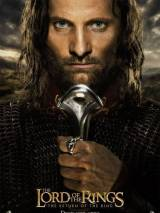

Властелин колец 3: Возвращение Короля

Близится последняя битва за Средиземье. На пути войск Саурона стоит лишь королевство Гондор, которым управляет
выживший из ума наместник Денетор. Силы хранителя кольца иссякают по мере продвижения к Мордору. Еще чуть-чуть и
мир будет повержен во тьму.
- Жанр: боевик, приключения, фэнтези
- Год выпуска: 2003
- Режиссеры: Питер Джексон
- Сценарий: Питер Джексон, Фрэн Уолш, Филиппа Бойенс, Дж.Р.Р. Толкин
- Композиторы: Говард Шор
- Операторы: Эндрю Лесни
- Продюсеры: Питер Джексон, Майкл Линн, Марк Ордески, Фрэн Уолш, Боб Вайнштейн, ...>
- Актеры: Элайджа Вуд, Орландо Блум, Вигго Мортенсен, Кейт Бланшетт, Хьюго Уивинг, Доминик Монахэн, Ян Холм,
Билли Бойд, Шон Бин, Кристофер Ли, ... [актеры и роли]
- Рейтинг: 9.43
- Продолжительность: 201 мин.
Терминатор 2: Судный день

Первая попытка убить Сару Коннор еще до рождения ее сына провалилась. Скайнет посылает в прошлое нового, более
совершенного Терминатора, чтобы убить самого Джона Коннора, который в будущем сможет привести людей к победе над
машинами. Сопротивлению удалось найти защитника. Вопрос только в том, кто первый найдет будущего спасителя
человечества.
- Жанр: боевик, триллер, фантастика
- Год выпуска: 1991
- Режиссеры: Джеймс Кэмерон
- Сценарий: Джеймс Кэмерон, Уильям Уишер мл.
- Композиторы: Брэд Фидел
- Операторы: Адам Гринберг
- Продюсеры: Марио Кассар, Джеймс Кэмерон, Стефани Остин, Гэйл Энн Херд
- Актеры: Арнольд Шварценеггер, Линда Хэмилтон, Роберт Патрик, Эдвард Ферлонг, Ксандер Беркли, С. Эпата
Меркерсон, Дженетт Голдстин, Уильям Уишер мл., Денни Пирс, Джо Мортон, ... [актеры и роли]
- Рейтинг: 9.39
- Продолжительность: 137 мин.
Побег из Шоушенка

Эндю Дюфрейн - бывший вице-президент крупного банка, заключенный тюрьмы Шоушенк. Ему нет и 30, а у него два
пожизненных за убийства жены и любовницы. Он не совершал этих преступлений, но он попал под волну страшных
стечений обстоятельств.За всю историю Шоушенка никому не удавалось из него сбежать...
- Жанр: драма
- Год выпуска: 1994
- Режиссеры: Фрэнк Дарабонт
- Сценарий: Стивен Кинг, Фрэнк Дарабонт
- Композиторы: Томас Ньюман
- Операторы: Роджер Дикинс
- Продюсеры: Лиз Глоцер, Дэвид В. Лестер, Ники Марвин
- Актеры: Тим Роббинс, Морган Фриман, Боб Гантон, Уильям Сэдлер, Клэнси Браун, Джил Беллоуз, Марк Ролстон,
Джеймс Уитмор, Ларри Бранденбург, Джеффри ДеМанн, ... [актеры и роли]
- Рейтинг: 9.38
- Продолжительность: 142 мин.